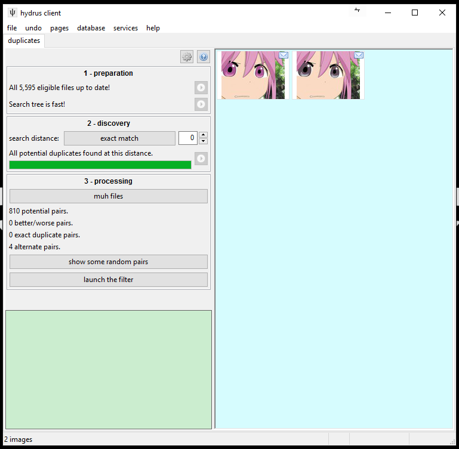

This is currently out of date! The duplicates system is being reworked right now at the database level to better support large groups of duplicates. The UI and workflow are simultaneously being streamlined. The concepts behind this help remain valid, but it will be properly updated once the work is complete to reflect the changes.
duplicates
As files are shared on the internet, they are often resized, cropped, converted to a different format, subsequently altered by the original or a new artist, or turned into a template and reinterpreted over and over and over. Even if you have a very restrictive importing workflow, your client is almost certainly going to get some duplicates. Some will be interesting alternate versions that you want to keep, and others will be thumbnails and other low-quality garbage you accidentally imported and would rather delete. Along the way, it would be nice to harmonise your ratings and tags to the better files so you don't lose any work.
Finding and processing duplicates within a large collection is impossible to do by hand, so I have written a system to do the heavy lifting for you. It is all on--
the duplicates processing page
On the normal 'new page' selection window, hit special->duplicates processing. This will open this page:

There are three steps to this page:
-
preparation
It takes a lot of CPU time to search for duplicates. The client has to generate difficult 'looks like' metadata about each file and then insert that into a complicated search tree, which itself must be carefully rebalanced to stay fast.
Thankfully, this first section is simple to use: if it tells you it wants to do work, then just hit the play buttons and leave the client alone for a bit--it will go down to the database and iterate through as many files and tree branches it needs to to make sure it can search efficiently.
This section doesn't usually need to do much work, but if it does, you should not try to do anything else with the client while it does its job--it will likely be burning 100% CPU, and it will aggressively lock the database in order to run as fast as possible. If you then try to run some normal search pages or tag some files on different pages in the client, the whole thing is likely to hang, and then you'll have to wait five or ten minutes (or eight hours, if it really does need to do a lot of work!) for it to all free up again. If you need to do some other work or shut down the client, just hit the stop button to pause its progress--you can continue where you left off whenever you like.
A future version of this will be neater and less rude, but this is all a first version, so please bear with it. If you end up using the duplicate filter regularly, you can set this heavy work to occur automatically in your regular idle/shutdown maintenance cycles from the cog icon on the same page.
-
discovery
Once the database is ready to search, you actually have to do it! You can set a 'search distance', which represents how 'fuzzy' or imprecise a match the database will consider a duplicate. I recommend you start with 'exact match', which looks for files that are as similar as it can understand. The smaller the search distance, the faster and better and fewer the results will be. I do not recommend you go above 8--the 'speculative' option--as you will be inundated with false positives.
Like the preparation step, this is very CPU intensive and will lock your db. Either leave it alone while it works or let the client handle everything automatically during idle time.
If you are interested, the current version of this system uses a phash to represent the image shape and a VPTree to search different files' phashes' relative hamming distance. I expect to extend it in future with multiple phash generation (flips, rotations, and 'interesting' image crops and video frames) and most-common colour comparisons.
-
processing
After you have searched your files, you should have a few dozen to a few ten-thousand 'potential' pairs. The number may be frighteningly high, but you will be able to cut it down quicker than you expect. There are several mathematical optimisations at the database level that can use one of your decisions to resolve multiple unknown relationships.
If you like, you can review some of these groups of potential pairs as thumbnails by hitting the 'show some random pairs' button. It is often surprising and interesting to discover what it has found.
You can do some manual filtering on these thumbnails--merging tags and deleting bad quality files, or even setting duplicate statuses manually through the right-click menu, if you have help->advanced mode active--but like archiving and deleting from your inbox, most of these operations are done much more quickly through a specialised filter:
the duplicates filter
Just like the archive/delete filter, this uses quick mouse-clicks or keyboard shortcuts to assign pairs of potential duplicates a particular new status that is saved back to the database. Depending on the status, different tag and rating and deletion actions will occur.
The system uses pairs because they are the simplest building block of the underlying network of similar files. Two similar files, A and B, have one relationship, A-B, but three similar files would have three: A-B, B-C, and A-C. Larger groups can get very complicated. Making decisions on just two files at a time is fast and easy, leaving the database to handle the difficult implications.
So, the filter works just like a normal media viewer window, except that it only ever presents two files at a time to scroll through. You can set shortcuts for any action, but by default, it uses:
-
Left-click or space: The files are dupes and the one I am looking at is better than the other.
-
Right-click: The files are not dupes but alternates.
-
Middle-click: Go back one decision.
-
Enter/Escape: Stop filtering.
The idea is to compare the two files by scrolling with your mouse wheel and then clicking to assign a status, at which point the next pair will be loaded. If you prefer different shortcuts, you can set them under file->shortcuts or the keyboard icon on the duplicate filter's top hover window. You can also access more 'duplicate decisions' through the labelled buttons and change what happens to the files and their tags and ratings on each different decision through the cog icon on the same top hover window.
Move your mouse to the top of the media viewer to bring up the top hover window. Hit the cog or keyboard icons to edit how it works, and click the buttons if you do not have a shortcut mapped. 'Custom action' lets you one of the other four actions but with one-off content merge options--say if you want to set that files are alternate but still with to merge some tags.
Because of technical limitations, you may be asked to checkpoint (save your progress to the database and then continue filtering) every now and then.
different duplicate statuses
There are currently five possible statuses. The client uses different logic to apply them at the database level, so please treat them as described and not a different scheme.
-
potential
This is the default state for new pairs the client thinks might be duplicates. It is essentially an 'unknown' state and represents the pool of pairs the client would like you, the human, to look at and make decisions about.
The duplicates filter shows these so you can filter them into the other four categories.
-
better/worse
This tells the client that the pair of files represent the exact same thing--except that the one you are looking for is 'better' in some way. What that means is up to you, but for most people this generally means:
- higher resolution
- better image quality
- png over jpg for screenshots
- jpg over png for busy images
- a slightly better crop
- no watermark or other site-frame or undesired blemish
- has been tagged by other people, so is likely to be the more 'popular'
However these are not hard rules--sometimes a file has a larger resolution or filesize due to a bad upscaling or encoding decision by the person who 'reinterpreted' it. You really have to look at it and decide for yourself.
Here is a good example of a better/worse pair:
The first image is better because it is a png (pixel-perfect pngs are always better than jpgs for screenshots of applications--note how obvious the jpg's encoding artifacts are on the flat colour background) and it has a slightly higher (original) resolution, making it less blurry. I presume the second went through some FunnyJunk-tier trash meme site to get automatically cropped to 960px height and converted to the significantly smaller jpeg. Whatever happened, we do not care about being able to fit our images into monetised social media <div> elements nor about consuming a few more KB on our hard drives, so let's keep the first and drop the second.
When both files are jpgs, differences in quality are very common and often significant:


Again, this is mostly due to some online service resizing and lowering quality to ease on their bandwidth costs. There is usually no reason to keep the lower quality version.
The default action on setting a better/worse pair is to move all local tags from the worse file to the best (i.e. adding them to the better file and then deleting them from the worse) and then send the worse file to the trash.
-
same quality duplicates
This tells the client that the pairs of files represent the exact same thing and that you cannot tell which is clearly better.
Here are two same quality duplicates:


There is no obvious different between those two. The filesize is significantly different, so I suspect the smaller is a lossless png optimisation, but in the grand scheme of things, that doesn't matter so much. Many of the big content providers--Facebook, Google, Clouflare--automatically 'optimise' the data that goes through their networks in order to save bandwidth. With pngs it is usually mostly harmless, but jpegs can be a slaughterhouse.
Given the filesize, you might decide that these are actually a better/worse pair--but if the larger image had tags and was the 'canonical' version on most boorus, the decision might not be so clear. Sometimes you just want to keep both without a firm decision on which is best, in which case you can just set this 'same quality' status and move on.
The default action on setting a same quality pair is to copy all local tags between the two files in both directions.
-
alternates
This tells the client the pair of files are not exactly the same but that one is an alteration of the other or they are both descended from a common original. Again, the precise definition is up to you, but it generally means something like:
- the files are recolours
- the files are alternate versions of the same image produced by the same or different artists (e.g. clean/messy or with/without hair ribbon)
- iterations on a close template
- different versions of a file's progress, such as the steps from the initial draft sketch to a final shaded version
Here are some recolours of the same image:

And some WIP:

And a costume change:

None of these are strictly duplicates, but they are obviously related. The duplicate search will notice they are similar, so we should let it know they are 'alternate'.
Here's a subtler case:
These two files are very similar, but try opening both in separate tabs and then flicking back and forth: the second's glove-string is further into the mouth and has improved chin shading, a more refined eye shape, and shaved pubic hair. It is simple to spot these differences in the client's duplicate filter when you flick back and forth.
I believe the second is an improvement on the first by the same artist. You might consider it a 'better' improvement, or you might be interested in keeping both, in which case they are certainly 'alternates'.
Here are three files you might or might not consider to be alternates:

These are all based on the same template--which is why the dupe filter found them--but they are not so closely related as those above, and the last one is joking about a different ideology entirely and might deserve to be in its own group. Ultimately, you might prefer just to give them some shared tag and consider them not alternates per se.
The default action here is to do nothing but record the alternate status. A future version of the client will support revisiting the large unsorted archive you build here and adding file relationship metadata, but creating that will be a complicated job that was not in the scope of this initial duplicate management system.
-
not related/false positive
The duplicate finder sometimes has false positives, so this status is to tell the client that the potential pair are not related in any way. This usually happens when two images have a similar shape by accident.
Here are two such files:

Despite their similarity, they are neither duplicates nor of even the same topic. The only commonality is the medium. I would not consider them close enough to be alternates--just adding something like 'screenshot' and 'imageboard' as tags to both is probably the closest connection they have.
The default action here is obviously to do nothing but record the status and move on. Recording the 'false positive' relationship is important to make sure the comparison does not come up again.
The incidence of false positives increases as you broaden the search distance--the less precise your search, the less likely it is to be correct. At distance 14, these files all match, but uselessly:


{kind=link}
{kind=link}
{kind=link}
{kind=link}
{kind=link}
{kind=link}
the future
This only supports jpgs and pngs at the moment, but I will attempt to add video in a future iteration. And as I said above, I would like to add more search algorithms beyond this first phash system, and there is plenty of db and gui stuff to add to provide support for 'this image has a parent'-type notification and navigation actions for alternates.